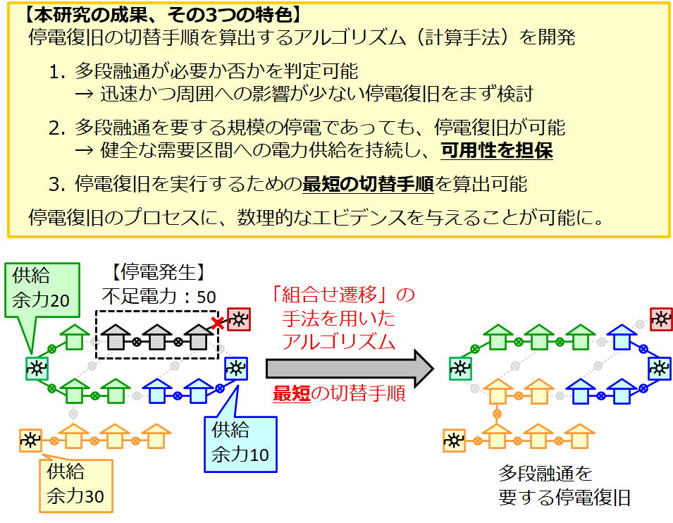

【共同プレスリリース】停電復旧の最短手順を算出するアルゴリズムを開発 ー多段融通にも対応、より広域な配電運用への活用に期待ー
東北大学，京都大学，中部大学，(株)明電舎による共同プレスリリースとして，本研究領域の産学連携・研究成果を発表しました． (特許共同出願中)．本研究領域から下記４名が研究に取り組んでまいりました．
伊藤 健洋（東北大学，領域代表 兼 A01班代表）
川原 純（京都大学，B01班代表）
鈴木 顕（東北大学，B01班）
飯岡 大輔（中部大学，B01班）
【発表のポイント】
【概要】
停電発生時、事故や故障が生じていない停電区間は、周辺の供給余力を用いて早期に停電復旧できることがあります。しかし、隣接する供給源の余力では賄いきれない規模の停電が発生した場合には、離れた供給源の余力も活用しなければなりません。これは多段融通と呼ばれ、停電が発生していない健全な需要区間にも供給経路の変更が生じる復旧方法です（図１参照）。多段融通では、制御対象となる配電系統は広域となり、加えて健全な需要区間も制御対象となるため、配電運用には困難を伴います。 この問題を解決するため、東北大学大学院情報科学研究科の伊藤健洋教授と鈴木顕准教授、京都大学大学院情報学研究科の川原純准教授、中部大学工学部の飯岡大輔准教授、株式会社明電舎による研究チームは、科学研究費助成事業 学術変革領域研究（Ｂ）「組合せ遷移」（＊１）を契機として２０２０年より共同研究を開始し、停電復旧の最短手順を算出するアルゴリズムを開発しました。（特許共同出願中）。 本研究のアルゴリズムは、停電復旧に多段融通が必要か否かを判定し、いずれの場合にも、停電復旧を実行するための最短の切替手順を算出します。本研究では「組合せ遷移」と呼ばれる新しいアルゴリズム手法を用いることで、健全な需要区間への電力供給を持続しながら、停電復旧への最短の切替手順を算出することを可能としました。さらに本アルゴリズムを用いることで、多段融通の必要性および切替手順の最短性が理論保証されるため、数理的エビデンスを伴った停電復旧を可能とします。主にアルゴリズムの研究は東北大学と京都大学が行い、電力系統技術分野の研究は中部大学と明電舎が行いました。 激甚災害に伴う大規模停電やライフスタイル変容に伴う需要密度の変化など、可用性を担保しながら、より広域な配電系統を制御することが現代社会では求められています。本研究のアルゴリズムは、このような要請に応え、系統事故時の自動復旧や系統混雑の解消、設備容量スリム化の計画業務など、より高度な配電運用へ活用されていくことが期待されます。  図１ 本研究の成果および多段融通の概念。
緑色と青色の供給源の余力を合わせても停電復旧には足りないが、健全な需要区間を黄色の供給源に切り替えることで、停電復旧を実行している。 （＊１） 本研究において、東北大学、京都大学、中部大学の研究者らは、下記の助成を受けています。（課題番号： JP20H05793、JP20H05794）
科学研究費助成事業 学術変革領域研究（Ｂ） 「組合せ遷移の展開に向けた計算機科学・工学・数学によるアプローチの融合」 領域代表および計画研究Ａ０１班代表 伊藤健洋 （東北大学） 計画研究Ｂ０１班代表 川原純 （京都大学） https://core.dais.is.tohoku.ac.jp/ |